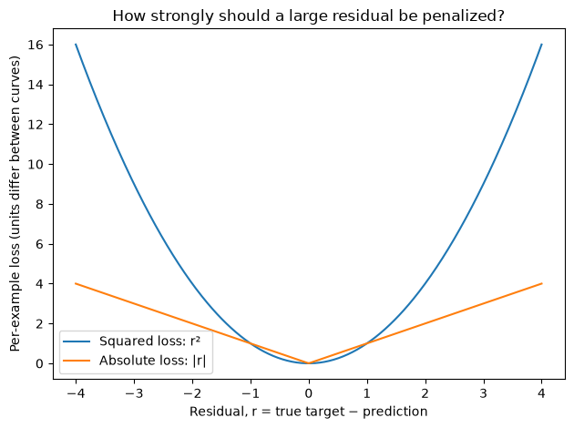
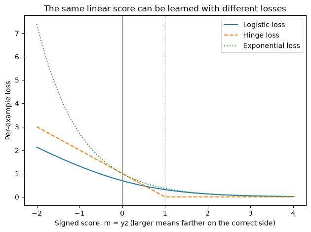
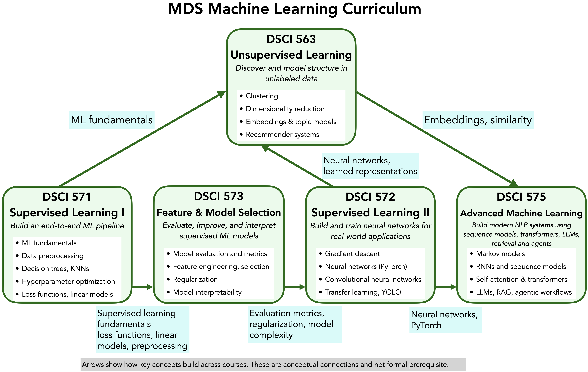

from pathlib import Path
import matplotlib.pyplot as plt
import numpy as np
import pandas as pd
from sklearn.compose import make_column_transformer
from sklearn.dummy import DummyClassifier
from sklearn.feature_extraction.text import CountVectorizer
from sklearn.impute import SimpleImputer
from sklearn.linear_model import LogisticRegression, Ridge
from sklearn.metrics import accuracy_score, log_loss
from sklearn.model_selection import cross_validate, train_test_split
from sklearn.pipeline import make_pipeline
from sklearn.preprocessing import OneHotEncoder, StandardScaler
DATA_DIR = Path("data")Chapter 8: Multiclass Classification, More on Loss Functions, and Conclusions
By the end of this chapter, you will be able to:
- Explain multiclass logistic-regression predictions using class scores, softmax, and cross-entropy.
- Compare squared, absolute, logistic, hinge, and exponential losses, and distinguish fitting objectives from evaluation scores.
- Inspect linear-model coefficients, individual feature contributions, and residuals with appropriate caveats.
- Build and critique a complete supervised-learning workflow, and explain what its results can support.
Chapter 7 showed how a weighted sum becomes a numeric prediction or a binary class probability. What changes when a prediction has three possible labels? And once we can make predictions, how should we judge their mistakes and explain their behaviour?
We will start by extending logistic regression to several classes, then compare what different losses reward. Two demonstrations connect these ideas to text and housing data. Finally, we will bring together the workflow you have learned throughout the course and consider the questions that motivate DSCI 573.
Plotting code is collapsed; expand “Show plotting code” to inspect how a figure was created. The demonstrations can be explored independently of how much time is available for running them live in class.
Multiclass classification
From two classes to several
Suppose a support request must be routed to billing, technical support, or account management. In Chapter 7, one probability and its complement described two countries. With three departments, knowing the probability of billing does not tell us how to divide the remaining probability between the other two classes.
This is multiclass classification: each example has exactly one target class among several possibilities. In multilabel classification, an example can have several labels at once—for instance, a request tagged both “billing” and “urgent.” We focus on multiclass classification here. Numeric class labels are identifiers, not quantities with an order or distance.
From class scores to probabilities
We want one probability for each class. The probabilities should be nonnegative, sum to 1, and assign more probability to classes with larger scores. Applying a separate sigmoid to each score would not generally make the results sum to 1.
Multinomial logistic regression starts with a linear score for each class:
\[ z_k=\mathbf{w}_k^\mathsf{T}\mathbf{x}+b_k. \]
Here \(k\) identifies a class. Each class has its own coefficients and intercept, so the same request can receive different scores for different departments.
We convert the scores into probabilities with softmax. First exponentiate each score to obtain a positive number; then divide by the sum of those numbers. For scores 2, 1, and 0:
| Department | Score | Exponentiated score | Probability |
|---|---|---|---|
| Billing | 2 | \(e^2\approx7.389\) | \(7.389/11.107\approx0.665\) |
| Technical support | 1 | \(e^1\approx2.718\) | \(2.718/11.107\approx0.245\) |
| Account management | 0 | \(e^0=1\) | \(1/11.107\approx0.090\) |
In general, with \(K\) classes,
\[ p_k=\frac{e^{z_k}}{\sum_{j=1}^K e^{z_j}}. \]
The denominator is shared by all classes, so their probabilities sum to 1. Increasing one score while holding the others fixed raises its probability and lowers the others. Softmax makes the classes compete within one probability distribution. It defines the model’s probability calculation; it does not guarantee reliable estimates on new data.
Let’s reproduce the hand calculation in Python.
scores = np.array([2.0, 1.0, 0.0])
# Subtracting the maximum leaves softmax unchanged and avoids large exponentials.
weights = np.exp(scores - scores.max())
pd.Series(weights / weights.sum(), index=["billing", "technical", "account"])billing 0.665241
technical 0.244728
account 0.090031
dtype: float64Cross-entropy: extending binary classification
The predicted class has the largest probability: billing in our example. No class needs to exceed 0.5. Probabilities of 0.40, 0.35, and 0.25 also select billing. They express a different degree of preference, even though the predicted class is unchanged.
What should fitting reward when there are several classes? We still want low loss when the model assigns high probability to the true class, and a large penalty when it confidently favours a wrong class. Adding alternatives does not change this goal.
Suppose the true department is technical support. Write the target using one indicator per class and list the predicted probabilities in the same order:
\[ \mathbf{y}=\begin{bmatrix}0\\1\\0\end{bmatrix}, \qquad \hat{\mathbf{p}}=\begin{bmatrix}0.1\\0.8\\0.1\end{bmatrix}. \]
This is a one-hot target: only the true class has indicator 1. Multiplying each log probability by its indicator selects the true-class term:
\[ L=-[0\log(0.1)+1\log(0.8)+0\log(0.1)] =-\log(0.8)\approx0.223. \]
For \(K\) classes, let \(\hat p_k\) be the model’s predicted probability of class \(k\), and \(y_k\) be its target indicator. Multiclass cross-entropy, also called multiclass log loss, is
\[ L=-\sum_{k=1}^{K}y_k\log(\hat p_k) =-\log(\hat p_{\text{true class}}). \]
Only one term contributes, so this is the same true-class loss used in Chapter 7. Giving the true class probability 0.05 instead of 0.8 would increase the loss to about 2.996. Fitting combines the mean loss across examples with regularization.
To recover binary cross-entropy, let \(y\) be the indicator for class 1 and \(\hat p\) its predicted probability. The other class then has indicator \(1-y\) and probability \(1-\hat p\):
\[ L=-[y\log(\hat p)+(1-y)\log(1-\hat p)]. \]
The binary formula is therefore the two-class case of the general formula. These are different ways to express the same principle, not unrelated losses.
NoteNotation and implementation
For several examples, use \(y_{ik}\) and \(\hat p_{ik}\) to identify both example \(i\) and class \(k\). The mean cross-entropy is \(-\frac{1}{n}\sum_{i=1}^{n}\sum_{k=1}^{K}y_{ik}\log(\hat p_{ik})\).
One-hot target notation is distinct from one-hot encoding input features. Scikit-learn accepts ordinary class labels for LogisticRegression; you do not need to construct these target vectors. The numerical class labels identify categories, not an order or distance between species or departments.
Predicting penguin species
Suppose we have measurements of a penguin and want to predict its species: Adelie, Chinstrap, or Gentoo. We will use the Palmer Penguins dataset, which contains measurements of 344 penguins. A local copy of the project’s CC0 data is included with the book, so this example needs no download when run.
We use four numerical features: bill length, bill depth, and flipper length in millimetres, and body mass in grams. Island and sex are available but omitted so that we can focus on multiclass predictions; the housing demo later uses categorical features. Our goal here is to trace predictions, so we use a fixed pipeline and training-data cross-validation rather than repeat a full search.
Some measurements are missing, and body mass has a different numerical scale from the lengths. We therefore impute missing measurements with training medians and standardize the features before fitting logistic regression. We reserve test data first and keep both transformations inside the pipeline so that each cross-validation fold learns its medians and scaling statistics from its training portion only.
The lbfgs solver supports multinomial logistic regression for this target. Compare against a baseline that returns the training class proportions. We report both accuracy and log loss: one describes class decisions, the other evaluates probabilities.
penguins = pd.read_csv(DATA_DIR / "penguins.csv")
penguin_features = ["bill_length_mm", "bill_depth_mm", "flipper_length_mm", "body_mass_g"]
X_penguins = penguins[penguin_features]
y_penguins = penguins["species"]
X_penguins_train, X_penguins_test, y_penguins_train, y_penguins_test = train_test_split(
X_penguins, y_penguins, test_size=0.25, random_state=571, stratify=y_penguins
)
penguin_pipeline = make_pipeline(
SimpleImputer(strategy="median"), StandardScaler(),
LogisticRegression(solver="lbfgs", max_iter=1000),
)
penguin_results = []
for name, model in {
"Class-proportion baseline": DummyClassifier(strategy="prior"),
"Logistic regression": penguin_pipeline,
}.items():
scores = cross_validate(
model, X_penguins_train, y_penguins_train, cv=5,
scoring={"accuracy": "accuracy", "log_loss": "neg_log_loss"},
)
penguin_results.append({
"Model": name,
"Mean CV accuracy": scores["test_accuracy"].mean(),
"Mean CV log loss": -scores["test_log_loss"].mean(),
})
pd.DataFrame(penguin_results).set_index("Model")| Mean CV accuracy | Mean CV log loss | |
|---|---|---|
| Model | ||
| Class-proportion baseline | 0.441855 | 1.049318 |
| Logistic regression | 0.976697 | 0.068490 |
The log-loss scorer returns a negative loss because scikit-learn search and scoring tools follow a “larger is better” convention. We reverse its sign for reporting, so smaller values in the log-loss column are better.
Now fit the fixed pipeline on the training data and trace a few training predictions. This table illustrates the calculation; it is not an independent performance estimate. The test set remains untouched.
penguin_pipeline.fit(X_penguins_train, y_penguins_train)
penguin_examples = X_penguins_train.iloc[:5]
penguin_predictions = pd.DataFrame(
penguin_pipeline.predict_proba(penguin_examples),
columns=penguin_pipeline.classes_, index=penguin_examples.index,
)
penguin_predictions["Predicted class"] = penguin_pipeline.predict(penguin_examples)
penguin_predictions["True class"] = y_penguins_train.loc[penguin_examples.index]
penguin_predictions| Adelie | Chinstrap | Gentoo | Predicted class | True class | |
|---|---|---|---|---|---|
| 117 | 0.999143 | 0.000789 | 0.000068 | Adelie | Adelie |
| 266 | 0.001481 | 0.006522 | 0.991997 | Gentoo | Gentoo |
| 335 | 0.233374 | 0.763603 | 0.003023 | Chinstrap | Chinstrap |
| 195 | 0.000710 | 0.019017 | 0.980273 | Gentoo | Gentoo |
| 95 | 0.976195 | 0.008183 | 0.015622 | Adelie | Adelie |
Each probability column follows the order in classes_; the largest identifies the predicted species. Adding classes does not remove the model’s linear restriction: the pairwise decision boundaries remain linear in the represented features.
Class predictions versus probability predictions
Accuracy uses the predicted class, so it cannot distinguish two models that make identical class predictions. Log loss uses the probability assigned to the true class. As in Chapter 7, the loss for one example is
\[ -\log(p_{\text{true class}}), \]
where \(\log\) is the natural logarithm. Giving the true class a probability near 1 produces a loss near zero. Assigning it a probability close to zero produces a large loss.
Consider four messages whose true labels are not spam, not spam, spam, and spam. Before running the code, compare the two sets of spam probabilities. Both models predict all four labels correctly by choosing the more probable class. Which assigns more probability to the true outcomes?
y_messages = np.array([0, 0, 1, 1])
spam_probabilities = {
"Hesitant": np.array([0.4, 0.4, 0.6, 0.6]),
"Confident": np.array([0.1, 0.1, 0.9, 0.9]),
}
rows = []
for name, p_spam in spam_probabilities.items():
probabilities = np.column_stack([1 - p_spam, p_spam])
rows.append({
"Model": name,
"Accuracy": accuracy_score(y_messages, p_spam > 0.5),
"Log loss": log_loss(y_messages, probabilities, labels=[0, 1]),
})
pd.DataFrame(rows).set_index("Model")| Accuracy | Log loss | |
|---|---|---|
| Model | ||
| Hesitant | 1.0 | 0.510826 |
| Confident | 1.0 | 0.105361 |
Both models have accuracy 1, but the confident model has lower log loss. This does not mean that making probabilities more extreme always helps. Confidence helps here because these predictions are correct. If the last message were actually not spam, assigning it a spam probability of 0.99 would incur much more loss than assigning it 0.6.
Log loss evaluates more than the hard class decision, but a low value on one dataset does not guarantee reliable probabilities for every group or for future data. The same concerns about representative evaluation data and overfitting still apply.
Exercise 8.1: Same class prediction, different evidence
Two models assign probabilities to billing, technical support, and account management. Model A returns (0.40, 0.35, 0.25), while model B returns (0.90, 0.05, 0.05).
What does each model predict? Which receives lower log loss if the true class is billing? What if it is technical support? Explain why accuracy alone cannot distinguish these models on this request.
TipSolution
Both predict billing. If billing is observed, model B has lower loss because it assigned 0.90 to that class rather than 0.40. If technical support is observed, model A has lower loss because it assigned 0.35 rather than 0.05. Accuracy counts both as correct in the first case and both as incorrect in the second; it ignores their probabilities.
How loss functions shape learning
Regression: squared error versus absolute error
Suppose two models predict delivery times in minutes. On four validation examples, model A’s residuals are 0, 0, 0, and 8 minutes, while model B’s residuals are 3, 3, 3, and 3 minutes. Model A is usually exact but makes one larger mistake. Model B is consistently a little wrong. Which would you prefer?
Before choosing a formula, decide what behaviour you want. Should one large mistake outweigh several smaller ones, or should every extra minute count equally? The answer depends partly on the consequences of an error. Mean absolute error (MAE) averages the magnitudes of the errors. Mean squared error (MSE) averages their squares. As in Chapter 7, let \(r_i=y_i-\hat y_i\) denote the residual, observed minus predicted target for example \(i\). With \(n\) examples,
\[ \operatorname{MAE}=\frac{1}{n}\sum_{i=1}^n |r_i|, \qquad \operatorname{MSE}=\frac{1}{n}\sum_{i=1}^n r_i^2. \]
The summation symbol means to add the contribution from each example. Both measures are zero for perfect predictions and increase as errors grow. Neither distinguishes an early prediction from a late one of the same magnitude.
delivery_residuals = pd.DataFrame({"Model A": [0, 0, 0, 8], "Model B": [3, 3, 3, 3]})
pd.DataFrame({
"MAE (minutes)": delivery_residuals.abs().mean(),
"MSE (minutes squared)": delivery_residuals.pow(2).mean(),
})| MAE (minutes) | MSE (minutes squared) | |
|---|---|---|
| Model A | 2.0 | 16.0 |
| Model B | 3.0 | 9.0 |
MAE favours model A: its average absolute error is 2 minutes, compared with 3 for model B. MSE favours model B: its mean squared error is 9, compared with 16 for model A. Squaring makes the single 8-minute error contribute 64 to the sum.
Doubling an error doubles its absolute loss but quadruples its squared loss. Squared error therefore gives large mistakes relatively more influence. This can be useful when large errors are especially costly, but it also makes the fitting procedure more sensitive to unusual target values. Absolute error grows more slowly; it does not make unusual observations irrelevant.
MAE is expressed in the target’s units, while MSE is expressed in squared units. Do not compare their numerical values as though a smaller number across different metrics identifies the better metric. Choose a measure whose behaviour helps answer the application question. If predicting a delivery too early has a different cost from predicting it too late, neither of these symmetric losses fully captures that difference.
The delivery example shows that the choice can change which model we prefer. To understand why, compare the loss for a single residual \(r=y-\hat y\):
\[ \ell_{\text{squared}}(r)=r^2, \qquad \ell_{\text{absolute}}(r)=|r|. \]
Averaging these per-example losses gives MSE and MAE. The following curves show their different growth rates. Their numerical heights have different units; focus on how each curve changes as the residual grows.
Show plotting code
residual_grid = np.linspace(-4, 4, 400)
fig, ax = plt.subplots()
ax.plot(residual_grid, residual_grid**2, label="Squared loss: r²")
ax.plot(residual_grid, np.abs(residual_grid), label="Absolute loss: |r|")
ax.set_xlabel("Residual, r = true target − prediction")
ax.set_ylabel("Per-example loss (units differ between curves)")
ax.set_title("How strongly should a large residual be penalized?")
ax.legend()
fig.tight_layout();
Classification: log loss, hinge loss, and exponential loss
Logistic regression and a linear SVM can use the same form of linear score, \(z=\mathbf{w}^\mathsf{T}\mathbf{x}+b\). Why might they learn different coefficients? The prediction rule alone does not determine what fitting rewards. Different losses express different preferences about correct and incorrect scores.
We want the loss to decrease as a prediction moves to the correct side of the boundary, and to increase as it moves farther onto the wrong side. But should a correct prediction ever be “good enough” to incur no further penalty? And how rapidly should the penalty grow for a strongly wrong prediction?
A common horizontal axis: the signed score
To compare these losses, temporarily encode the binary labels as \(y=-1\) and \(y=+1\), rather than the \(0/1\) encoding used for binary cross-entropy. Let
\[ m=yz. \]
This signed score combines the true label and the model’s score. If \(y=+1\), a positive \(z\) is on the correct side. If \(y=-1\), a negative \(z\) is on the correct side. Multiplication makes both cases positive:
| True label \(y\) | Score \(z\) | Signed score \(m=yz\) | Interpretation |
|---|---|---|---|
| \(+1\) | 2 | 2 | Correct side |
| \(-1\) | \(-2\) | 2 | Correct side |
| \(+1\) | \(-2\) | \(-2\) | Incorrect side |
| \(-1\) | 2 | \(-2\) | Incorrect side |
A signed score near zero means the example is near the boundary. Increasing \(m\) moves in the correct direction. Its magnitude is a score, not a distance in the original feature units.
Logistic and hinge loss
With this encoding, the familiar logistic loss can be written as
\[ \ell_{\text{logistic}}(m)=\log(1+e^{-m}). \]
To see the connection, the model’s probability for the true class is \(\sigma(m)\), and \(-\log(\sigma(m))=\log(1+e^{-m})\). The probability-based log loss has not changed; only its expression and label encoding have.
Hinge loss instead asks whether an example is on the correct side with a sufficiently large signed score:
\[ \ell_{\text{hinge}}(m)=\max(0,1-m). \]
It decreases linearly until \(m=1\), then becomes zero. Thus a correct prediction with \(0<m<1\) still incurs loss: being on the correct side alone is not enough. Scores beyond 1 incur no additional hinge loss. This is the margin idea behind SVMs. Some implementations use squared hinge loss instead.
A brief extension: exponential loss
Another possibility is to make the penalty grow especially quickly for strongly wrong scores:
\[ \ell_{\text{exponential}}(m)=e^{-m}. \]
Like logistic loss, exponential loss keeps decreasing as the signed score grows. For very negative scores, it grows much faster than logistic or hinge loss, giving those examples considerable influence. It connects to boosting methods such as AdaBoost, which you will encounter when studying ensembles in DSCI 573; we will not develop that algorithm here.
Before looking at the plot, predict which curve will flatten to exactly zero, and which will rise fastest on the left.
Show plotting code
signed_scores = np.linspace(-2, 4, 400)
fig, ax = plt.subplots()
ax.plot(signed_scores, np.logaddexp(0, -signed_scores), label="Logistic loss")
ax.plot(signed_scores, np.maximum(0, 1 - signed_scores), label="Hinge loss", linestyle="--")
ax.plot(signed_scores, np.exp(-signed_scores), label="Exponential loss", linestyle=":")
ax.axvline(0, color="gray", linewidth=1)
ax.axvline(1, color="gray", linewidth=1, linestyle=":")
ax.set_xlabel("Signed score, m = yz (larger means farther on the correct side)")
ax.set_ylabel("Per-example loss")
ax.set_title("The same linear score can be learned with different losses")
ax.legend()
fig.tight_layout();
Hinge loss reaches zero at a signed score of 1, while logistic and exponential loss continue decreasing. Exponential loss rises fastest for strongly wrong predictions. None is universally best: the choice changes how examples influence fitting and interacts with regularization and the model family.
These are losses of signed scores, not three ways of computing probabilities. A raw SVM score is not automatically a probability. Also, numerical loss values from different functions are not a shared performance scale. Use each function to understand its own penalties, then evaluate candidate models with a measure chosen for the task.
Fitting loss, regularization, and evaluation scores
A loss measures disagreement between a prediction and its target. A fitting objective combines the losses over training examples and may add a regularization penalty. An evaluation score summarizes performance on the data we use to assess the fitted model. A loss can also serve as an evaluation measure: for example, we can compute MSE on validation predictions.
For scikit-learn’s Ridge, the fitting objective is
\[ \sum_{i=1}^n (y_i-\hat y_i)^2 + \alpha\sum_{j=1}^d w_j^2. \]
Here, \(d\) is the number of features, \(w_j\) is a coefficient, and \(\alpha\) controls the penalty. The first term is a sum of squared errors, rather than a mean. Without a penalty, minimizing the sum or the mean gives the same fitted predictions. With a penalty, changing the scale of the loss changes its balance with the penalty unless we also rescale \(\alpha\). This is one reason to check an estimator’s exact objective before interpreting a regularization value. See the Ridge documentation.
Changing the scoring argument of a search does not replace the estimator’s fitting objective. For example, comparing Ridge models using validation MAE still fits each candidate using its squared-error objective and penalty. The search chooses among those fitted candidates according to MAE.
Scikit-learn’s search tools maximize scores. For losses, scorer names such as neg_mean_absolute_error and neg_log_loss return the negative of the loss so that larger is better. A score of \(-2\) is better than \(-5\) because it corresponds to a smaller loss. Estimator defaults also differ: Ridge.score reports \(R^2\), while LogisticRegression.score reports accuracy. Always establish which quantity you are comparing.
Exercise 8.2: What changed inside the search?
A colleague changes GridSearchCV(ridge_pipeline, ..., scoring="r2") to use scoring="neg_mean_absolute_error". They conclude that Ridge.fit now minimizes absolute error. Explain the mistake. Could the selected alpha still change?
TipSolution
Each candidate still fits using Ridge’s squared-error objective and regularization penalty. The search now compares its validation predictions using negative MAE, so the ranking of candidates—and the selected alpha—can change. We should choose the comparison measure before inspecting final test results.
Model interpretation: examining coefficients
A validation score summarizes performance, but it does not explain how an individual prediction was calculated. We would like to connect the inputs, fitted parameters, and resulting prediction—and identify cases where that explanation reveals a limitation.
Global coefficients versus individual contributions
A coefficient describes how a represented feature changes the model’s score or numeric prediction, holding other represented features fixed. Its contribution to one prediction also depends on that example’s feature value: \(w_jx_j\). A large coefficient contributes nothing when \(x_j=0\).
We will use sentiment to reconstruct individual predictions, then housing to interpret coefficients after different kinds of preprocessing. These are explanations of fitted calculations, not evidence of causal effects.
Sentiment-analysis demonstration
Suppose we want to classify a movie review as positive or negative. Bag-of-words gives us numerical features and logistic regression gives each word a coefficient. We can inspect both the model’s overall preferences and the contributions to one particular review.
The following deliberately small, authored teaching sample makes the demonstration self-contained. It is not a benchmark or evidence that the model generalizes to real reviews. The larger IMDB class demo can use the same inspection steps after a proper training-data model comparison. Here we focus on reconstructing the prediction calculation, without reporting an accuracy estimate.
positive_reviews = [
"a good movie with excellent acting", "a wonderful story and a great cast",
"an enjoyable film with a lovely ending", "brilliant acting and a compelling story",
"a delightful movie that I enjoyed", "a great film with excellent direction",
"wonderful performances and beautiful scenes", "an entertaining story with good acting",
]
negative_reviews = [
"a bad movie with terrible acting", "a boring story and a poor cast",
"an awful film with a disappointing ending", "terrible acting and a dull story",
"a dreadful movie that I disliked", "a poor film with awful direction",
"disappointing performances and tedious scenes", "a boring story with bad acting",
]
review_texts = positive_reviews + negative_reviews
review_labels = ["positive"] * len(positive_reviews) + ["negative"] * len(negative_reviews)
sentiment_pipeline = make_pipeline(CountVectorizer(), LogisticRegression(max_iter=1000))
sentiment_pipeline.fit(review_texts, review_labels)
vectorizer = sentiment_pipeline.named_steps["countvectorizer"]
sentiment_model = sentiment_pipeline.named_steps["logisticregression"]
print("Class order:", sentiment_model.classes_)Class order: ['negative' 'positive']Global coefficients and contributions to one review
Check the class order first. A positive coefficient pushes toward classes_[1], which is positive sentiment here. A negative coefficient pushes toward negative sentiment. The coefficient describes the fitted model’s association with a token, not the token’s meaning in every context.
word_coefficients = pd.Series(
sentiment_model.coef_[0], index=vectorizer.get_feature_names_out(),
name="coefficient",
).sort_values()
pd.concat({
"Most negative coefficients": word_coefficients.head(5),
"Most positive coefficients": word_coefficients.tail(5),
})Most negative coefficients disappointing -0.592167
terrible -0.563280
awful -0.553116
boring -0.528993
bad -0.522556
Most positive coefficients delightful 0.335819
great 0.512306
good 0.514497
excellent 0.517288
wonderful 0.548021
Name: coefficient, dtype: float64A coefficient alone is not a contribution to every prediction. A word absent from a review contributes zero. With count features, a word occurring twice contributes twice its coefficient. Let’s trace the review “good good movie but terrible acting.” Before running the code, which words do you expect to push its score in each direction?
example_review = "good good movie but terrible acting"
review_counts = vectorizer.transform([example_review])
present = review_counts.indices
counts = review_counts.data
review_contributions = pd.DataFrame({
"word": vectorizer.get_feature_names_out()[present],
"count": counts,
"coefficient": sentiment_model.coef_[0, present],
})
review_contributions["contribution"] = (
review_contributions["count"] * review_contributions["coefficient"]
)
review_contributions.sort_values("contribution")| word | count | coefficient | contribution | |
|---|---|---|---|---|
| 3 | terrible | 1 | -0.563280 | -0.563280 |
| 2 | movie | 1 | -0.003208 | -0.003208 |
| 0 | acting | 1 | 0.015723 | 0.015723 |
| 1 | good | 2 | 0.514497 | 1.028993 |
reconstructed_score = review_contributions["contribution"].sum() + sentiment_model.intercept_[0]
pd.Series({
"Sum of contributions plus intercept": reconstructed_score,
"Pipeline decision score": sentiment_pipeline.decision_function([example_review])[0],
"P(positive)": sentiment_pipeline.predict_proba([example_review])[0, 1],
"Predicted class": sentiment_pipeline.predict([example_review])[0],
})Sum of contributions plus intercept 0.497419
Pipeline decision score 0.497419
P(positive) 0.621853
Predicted class positive
dtype: objectWhat happens when word order or negation changes?
Now consider “good” and “not good.” We would like the model to respond to the negation, but it can only use distinctions present in its features and patterns supported by training data. What do you predict will happen in this teaching example?
probe_reviews = ["good", "not good", "good movie bad acting", "bad movie good acting"]
probe_results = pd.DataFrame(
sentiment_pipeline.predict_proba(probe_reviews),
columns=[f"P({label})" for label in sentiment_model.classes_],
index=probe_reviews,
)
probe_results["Predicted class"] = sentiment_pipeline.predict(probe_reviews)
probe_results| P(negative) | P(positive) | Predicted class | |
|---|---|---|---|
| good | 0.369657 | 0.630343 | positive |
| not good | 0.369657 | 0.630343 | positive |
| good movie bad acting | 0.494089 | 0.505911 | positive |
| bad movie good acting | 0.494089 | 0.505911 | positive |
In this sample, not never occurred during fitting, so the vectorizer ignores it. “Good” and “not good” therefore have identical representations. The last two reviews also have identical unigram counts despite assigning “good” and “bad” to different aspects of the movie. No classifier can recover distinctions that its input representation discarded.
Bigrams can represent a phrase such as not good, but adding bigrams alone would not fix this sample: the phrase must occur in the training vocabulary, and the training labels must provide useful evidence about it. Avoid removing negation words automatically when preprocessing sentiment text. Real reviews also introduce ambiguity, sarcasm, and vocabulary differences that this small example cannot assess.
Interpreting coefficients after preprocessing
Chapter 7 used selected numerical features from King County house sales. Now suppose we also want to use ZIP code. Its numeric labels do not measure distances or an ordered quantity, so we will treat it as categorical. Our goal is to connect a mixed-feature pipeline back to names, coefficients, and prediction mistakes.
Each row records a sale of an individual house, and price is its sale price in dollars. We retain the same numerical features and split as Chapter 7, then add ZIP code. This random split illustrates evaluation on similar sampled sales, rather than a claim about forecasting future market conditions. A real deployment would require checking time and repeated-property structure when choosing a split.
housing = pd.read_csv(DATA_DIR / "kc_house_data.csv", dtype={"zipcode": str})
numeric_features = ["sqft_living", "bedrooms", "bathrooms", "floors", "yr_built", "lat", "long"]
categorical_features = ["zipcode"]
X_housing = housing[numeric_features + categorical_features]
y_housing = housing["price"]
X_housing_train, X_housing_test, y_housing_train, y_housing_test = train_test_split(
X_housing, y_housing, test_size=0.2, random_state=123
)
numeric_pipeline = make_pipeline(SimpleImputer(strategy="median"), StandardScaler())
categorical_pipeline = make_pipeline(
SimpleImputer(strategy="most_frequent"), OneHotEncoder(handle_unknown="ignore")
)
housing_preprocessor = make_column_transformer(
(numeric_pipeline, numeric_features), (categorical_pipeline, categorical_features)
)
housing_pipeline = make_pipeline(housing_preprocessor, Ridge())Fit a fixed alpha=1 model on training data to inspect how it computes predictions. This demonstration focuses on interpreting coefficients after preprocessing; choosing and evaluating a final model follows the workflow you have practised in your labs. We leave the test data untouched here.
Recover feature names and interpret their units
housing_pipeline.fit(X_housing_train, y_housing_train)
housing_model = housing_pipeline.named_steps["ridge"]
housing_feature_names = housing_pipeline.named_steps["columntransformer"].get_feature_names_out()
housing_coefficients = pd.Series(
housing_model.coef_, index=housing_feature_names, name="coefficient"
)
housing_coefficients.to_frame()| coefficient | |
|---|---|
| pipeline-1__sqft_living | 244805.227649 |
| pipeline-1__bedrooms | -44013.845860 |
| pipeline-1__bathrooms | 21071.288905 |
| pipeline-1__floors | -354.782233 |
| pipeline-1__yr_built | -25653.338977 |
| ... | ... |
| pipeline-2__zipcode_98177 | -12308.674954 |
| pipeline-2__zipcode_98178 | -156173.454701 |
| pipeline-2__zipcode_98188 | -176914.513645 |
| pipeline-2__zipcode_98198 | -157260.939889 |
| pipeline-2__zipcode_98199 | 123093.668944 |
77 rows × 1 columns
The transformed names link each coefficient to the feature actually received by Ridge. For standardized numerical features, a one-unit increase represents one training-set standard deviation; the coefficient is the corresponding change in predicted dollars with other represented inputs held fixed. One-hot ZIP-code indicators remain 0 or 1, so their coefficients have a different interpretation and should not be ranked alongside standardized numerical coefficients as interchangeable measures of importance.
We retained all ZIP-code categories, so there is no single omitted reference ZIP code. Switching between two known ZIP codes changes two indicators: one turns off and another turns on. Their coefficient difference gives the model’s predicted change when the numerical features stay fixed. Because ZIP code and coordinates overlap in information, the individual coefficients depend on the representation and regularization. They are not causal neighbourhood effects.
The negative bedroom coefficient from Chapter 7 illustrated the same issue: changing bedroom count while holding living area fixed is different from adding a bedroom by extending a house.
Interpreting coefficients with care
Coefficients explain how the fitted model makes predictions, not how the world works. Keep the following cautions in mind:
- Prediction is not causation. A coefficient describes the model’s calculation with other represented features held fixed. It does not establish what would happen if we intervened to change that feature in the real world.
- Units and preprocessing matter. A standardized numerical feature, a word count, and a one-hot category indicator represent different kinds of changes. Compare magnitudes only with a clear understanding of their scales and encodings.
- Correlated features can share predictive information. Their individual coefficients can change substantially when features are added or removed, or when the training sample changes, even if predictions remain similar. Holding correlated features fixed may describe an unrealistic comparison.
- Regularization affects the coefficients we interpret. Ridge and logistic regression balance fitting the data against a penalty on coefficients. Changing
alphaorCcan change their magnitudes and sometimes their signs. A small coefficient may reflect shrinkage or overlapping information; it does not prove that a feature is irrelevant. - Coefficient magnitude is not automatic feature importance. The contribution to one prediction also depends on the feature value. For logistic regression, a coefficient changes the raw score, not the probability by a fixed number of percentage points; check class ordering before interpreting its sign.
- The explanation is limited by the model and its inputs. Missing predictors, discarded word order, or relationships that the linear rule cannot express can all limit predictions. A plausible-looking coefficient does not establish that the model is accurate or its assumptions are appropriate.
Interpret coefficients alongside the representation, regularization settings, validation results, and model mistakes. Report surprising or unstable coefficients as limitations to investigate rather than turning them into confident claims about the world.
Putting the complete workflow together
Our supervised-learning workflow so far
You have been practising this workflow in your labs. Each week, we have added tools and decisions: first a prediction task and baseline, then data splitting and cross-validation, preprocessing pipelines, comparisons between model families, and systematic hyperparameter search. These are parts of one analysis, rather than separate recipes.
Our workflow so far is:
- Define the task and available features. Identify what one example represents, what you want to predict, and which inputs will be available when a prediction is needed.
- Reserve test data. Choose a split appropriate for the intended prediction setting and protect the test set during development.
- Explore training data. Check distributions, missingness, unusual values, and possible leakage.
- Build preprocessing pipelines. Use suitable transformations for each feature type and keep learned preprocessing inside cross-validation.
- Establish a baseline and compare plausible models. Compare their validation results using consistent splits and a clearly identified score.
- Tune promising approaches. Use grid or randomized search within a sensible computation budget, then select a workflow using training-data validation results.
- Interpret the fitted model and inspect its mistakes. Examine what the model learned and where its predictions are unreliable.
- Evaluate on the test set. Assess the selected workflow after development choices are settled.
- Communicate findings and limitations. Explain performance relative to a baseline and what the evidence can and cannot support.
This week’s addition: interpretation
This week, we have added a more deliberate step of asking how the model makes its predictions. Linear-model coefficients and individual feature contributions let us inspect the calculations directly. Some other models, such as decision trees, provide model-specific feature importances. These summaries require care: a coefficient or importance value describes the fitted model, not a causal explanation of how the world works. Values from different methods are not interchangeable.
Interpretation is a step in the analysis workflow, rather than a transformer added to a scikit-learn Pipeline. Use it alongside validation errors: does a regressor tend to overpredict or underpredict? Which classes does a classifier confuse? Are mistakes concentrated in particular kinds of examples, and do their consequences differ?
If inspection suggests changes to the representation or model, return to training-data development and comparison. This makes the workflow iterative while preserving the test set for final assessment.
How the workflow will grow in DSCI 573
The first lecture of DSCI 573 focuses on evaluation metrics. We have already seen why this matters: accuracy and log loss answer different questions, and MAE and MSE can prefer different regression predictions. The next course will develop how to choose measures that reflect the errors and consequences relevant to an application.
You will also add more deliberate feature engineering and feature selection. Feature engineering asks how to represent information in ways that help a model learn useful relationships; feature selection asks which inputs to retain. These choices belong inside model development and validation, alongside preprocessing and hyperparameter selection. They extend the workflow you already know.
Communicating findings and limitations
Report the task, the comparison with a baseline, the evaluation procedure, and the important types of mistakes. Be clear about which data and situations the results describe. A good average score does not establish that every kind of example is predicted well or that performance will remain the same in a different setting.
Communicate limitations honestly, without exaggerating accuracy, reliability, or understanding. Predictive associations do not establish causal effects, and plausible-looking coefficients do not prove that a model has captured the true relationship. If final test results disappoint, report them rather than repeatedly tuning against the same test set. These habits remain essential as the workflow grows more sophisticated.
Exercise 8.3: Review a proposed workflow
A team wants to route support requests to three departments. It includes a field recording which department eventually resolved each request, builds a text vocabulary using all requests, and then creates a train/test split. It tries many values of C, keeps the one with the best test accuracy, and reports that accuracy as evidence that its probability predictions are reliable.
Identify the problems and propose a corrected workflow using tools from this book. Explain which choices must be settled before final test evaluation.
TipSolution
The resolving department is not available when a new request arrives and would reveal information about the outcome. Remove it and check the availability of the remaining inputs. Reserve the test set before learning a vocabulary; place CountVectorizer and the model in a pipeline so that each cross-validation fold learns its vocabulary only from that fold’s training portion. Use training-data cross-validation to choose C, and compare against a baseline. Decide whether the intended use requires hard routing decisions, probability estimates, or both, and choose evaluation measures accordingly. Accuracy alone does not assess the assigned probabilities. Evaluate the selected workflow once on the test set and explain the limits of that evidence.
What you can do now and what comes next
You began this course with data tables and prediction tasks. You can now define a supervised-learning problem, represent numerical, categorical, and text features, establish baselines, compare model families, and tune a complete pipeline. You can separate development from final evaluation and inspect what a fitted model has learned.
The models matter, but so do the decisions around them. Which information will actually be available? What baseline should the model improve on? Have preprocessing and model selection respected the boundaries between training and evaluation data? What does the reported score tell us? These questions remain useful as models become more complex.
The curriculum map places this foundation in the wider MDS machine-learning sequence:

DSCI 573 deepens evaluation, selection, regularization, and interpretation. DSCI 572 builds on weighted sums and loss functions to develop optimization and neural networks. DSCI 563 explores structure in unlabelled data, while DSCI 575 extends representations and neural networks into advanced applications. The map’s arrows show conceptual connections rather than formal prerequisites.
Some questions now deserve a closer look:
| Question remaining | Connection to DSCI 573 |
|---|---|
| Is accuracy sufficient when different mistakes have different consequences? | Evaluation metrics |
| Can combining models improve predictions? | Ensembles |
| How should we control flexibility beyond this introduction? | Regularization |
| How can we explain predictions from more complex models? | Model transparency and SHAP |
| Which features should we retain? | Feature selection |
These are extensions of questions you can already recognize, rather than reasons to postpone building a first model. For your next prediction problem, define the task clearly, build a simple baseline, and keep your evaluation trustworthy. Use the evidence to decide what to try next, and explain what that evidence can support.
Summary
- Multiclass logistic regression computes a score for each class and uses softmax to obtain probabilities summing to 1. The largest probability determines the prediction, even when it is below 0.5.
- Cross-entropy measures the probability assigned to the true class. The same principle applies to binary and multiclass predictions.
- MAE and MSE assign different relative weight to large residuals. Accuracy evaluates class decisions, while log loss evaluates probabilities.
- Logistic, hinge, and exponential losses reward different behaviour of a signed classification score. Hinge loss becomes zero beyond a margin; exponential loss grows especially rapidly for strongly wrong scores.
- Fitting objectives learn parameters; evaluation scores compare predictions. Changing a search’s scorer does not change the estimator’s fitting objective.
- Coefficients describe the fitted calculation. Individual contributions also depend on feature values, and residuals can reveal patterns hidden by an aggregate score.
- A complete workflow combines task definition, protected evaluation data, training-data exploration, preprocessing, baselines, comparison, tuning, inspection, and clear communication of results and limitations.